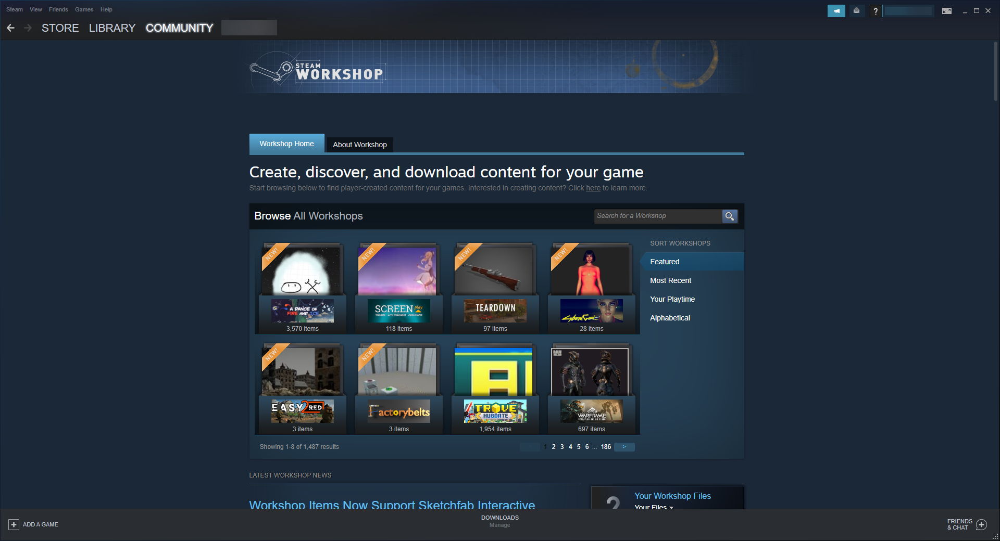
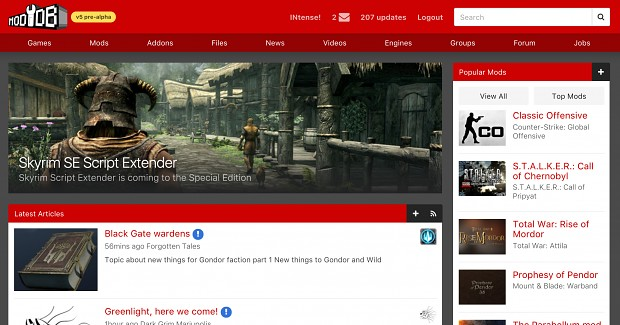
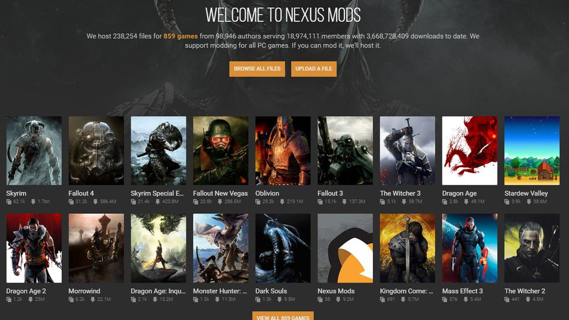

Other Mod Sites
Our Mod Shop has the best version of mods for all of the video games that are stored in your room! Although, our mods
also work well with some of the best modding programs out online. You will need to have a modding program installed
onto your computer in order to be able to have some fun with our mods. Below are a few of the best modding programs
to use to get started with modding your games.
- Steam Workshop

Steam Workshop is a mod service created by the gaming platform itself, Steam, that is full of players from the Steam community sharing their mod creations with each other. This service helps players create mods for the many games that are in Steam, and is an easy process to find, download, and use them under their own application. Using this service also allows you to collaborate with other players in designing their mods, and can even earn money from uploading them to the service! Steam Workshop is the best mod application to start with for anyone that is a beginner with video game mods, as well as one of the biggest communities in game modding.
Click here to go to Steam Workshop
(Will open a new tab)
- Mod DB

ModDB is one of the modding websites that has lived with the game modding community the longest out of any other modding program. ModDB also serves as another community for game modders to get together, collaborate, and share their work with each other, supporting many independent game developers as well. It is also worth mentioning that ModDB also runs an annual event known as the "Mod Of The Year" event, where game modders across the community vote for the best and most creative mods on the website across multiple categories. Winning the Mod Of The Year award can be a great accomplishment and can allow you to easily network your modding skills with others, but there are much more networking opprotunites in the modding communuity than just the awards with ModDB.
Click here to go to Mod DB
(Will open a new tab)
- Nexus Mods

Nexus Mods is another one of the modding websites that hosts serving a unique variety of mods for games for gamers to download and enhance to their gameplay. A few things that makes this mod website unique from the others is its own mod manager tool, which is beneficial in handling and installing mods with an easier and smoother proccess, as well as keeping track of any other installed mods they own and avoid any kind of conflicts. Nexus Mods's own security measures are also enough for players to be at peace when downloading and using game mods, as every mod that is added onto this website is checked through and moderated before made avalible to public. According to one of Nexus Mods's support questions under the moderation category, "Why has my mod been quarantined?", they claim that "All mod files shared on our website must pass through several security checks before they can be downloaded by the community. If any of these checks fail during the upload process, the file will be quarantined and will be unavailable until it has been reviewed by a moderator." This means that mods that are uploaded to this site are processed with security scans, and in case any red flags may come up during the process, a human is able to look at the error and determine wether the call for the red flag was either a mistake or legitimate. So, players can download and have fun with their mods from this website with a peace of mind. One more unique feature that Nexus Mods has in store for some modders is their own premium membership option that has some more additonal benefits for users, such as faster downloads, ad-free browsing, and a vareity of other perks. If you ever wanted to download and try some game mods for some of your games, but questioned the safety and security behind it, this is the site to go to!
Click here to go to Nexus Mods
(Will open a new tab)
Back to main page